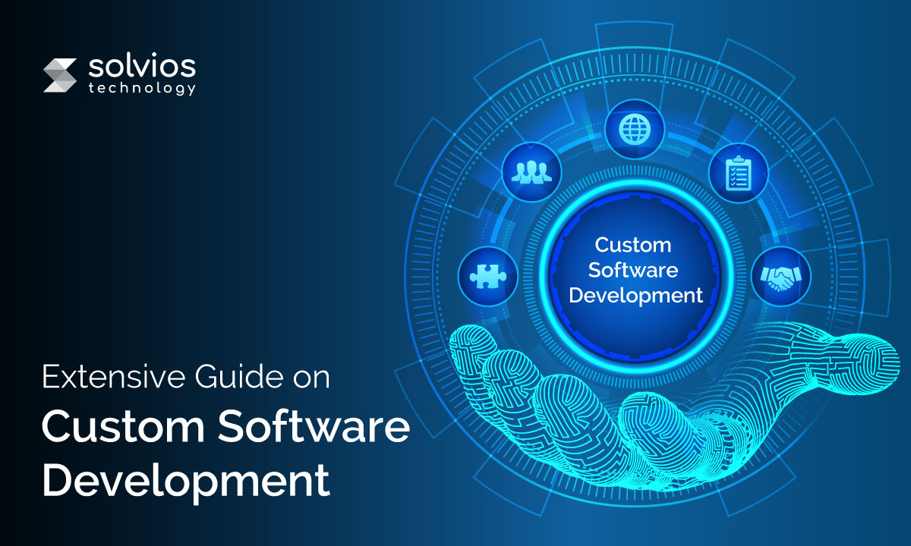

Custom Software Development
We build tailored software solutions to meet your specific business needs. It involves in-depth analysis, design, coding, testing, and deployment offering greater flexibility,efficiency, and competitive advantage compared to off-the-shelf software.
Our Expertise
We have a team of experts that specialize in understanding the intricate business requirements of our client and their changing demands and commit to entirely satisfy the clients by our services.
Our team aims to deliver advance and innovative solutions to client for which our team of business analysts and developers work closely with the client.
At Mantha Tech Solutions, we follow a well disciplined , flexible and proven methodology to accomplish our commitment by ensuring that our deliverables fulfills the needs of clients and stands to the expectations.
PURPOSE
We at Mantha Tech Solutions also develop Data-Intensive large scale applications. We have specialized in developing software applications spread across various business domains such as scalable software applications, Application suite, educational software application, health software applications, information software applications etc. We develop applications that are intended to automate everyday workflow of a organization.